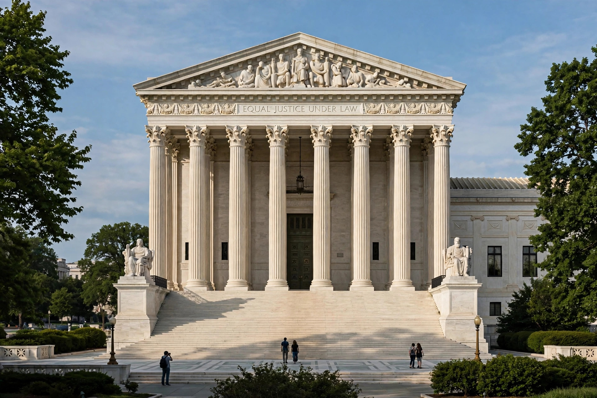

Justiciability concerns the limits upon legal issues over which a court can exercise its judicial authority. It includes the requirement in U.S. law that courts decide only actual "cases" or "controversies" under Article III of the Constitution, rather than issuing advisory opinions. A claim that is not justiciable must be dismissed, even if it might otherwise state a meritorious claim.

Historically courts also invoked prudential limits (no third-party or generalised grievances, zone of interests), though the modern Court has recast many as questions of statutory interpretation or Article III itself.
Other jurisdictions use related concepts such as locus standi and reviewability, though some constitutional courts permit abstract review.